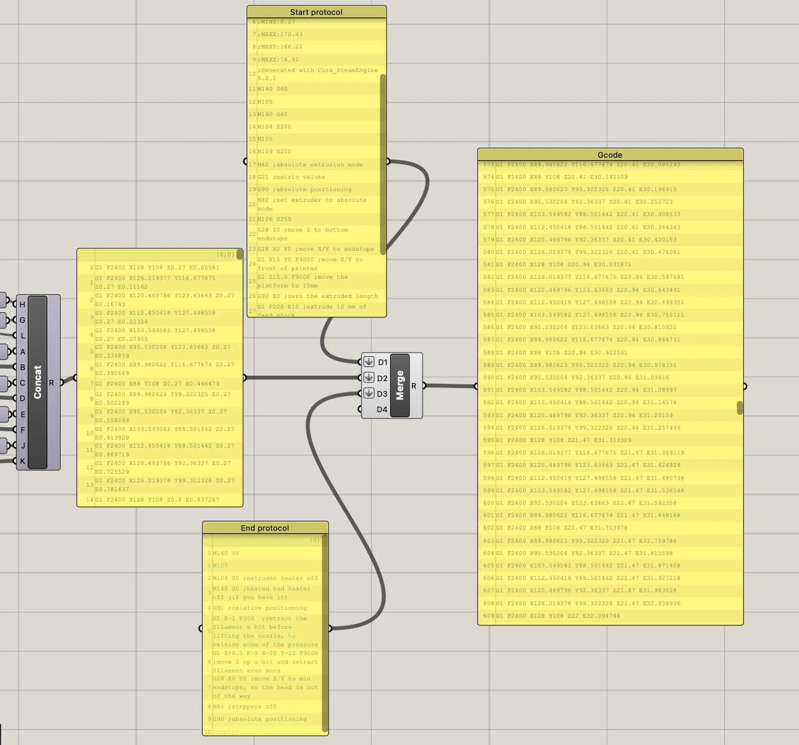

Generating G-code with Grasshopper#
Authors: Mehmet Ozdemir, Zjenja Doubrovski, Jose Martinez Castro
Last Edited: 2023-08-03
Download the Grasshopper Script Here:
Basics of G-code#
G-code is a common language for CNC (Computer Numerical Control) machine that includes a list of operations. In the case of 3D FDM printers, this includes operations on how to move, how much filament to extrude, what temperature to set, and more. G-code comes in different “flavors” which indicates what commands are accepted and how they are interpreted by the printer. In this lesson, we will focus on the Marlin flavor, although other flavors only have small differences. For a full list of G-code commands, please refer to the resources here: marlinfw.org/meta/gcode and reprap.org/wiki/G-code

Common Commands#
Command |
Description |
|---|---|
; |
Text after semicolon makes no effect (for comments and explanations) |
G0 & G1 |
To initiate movement (G0 for non-extrusion movement and G1 for extrusion movement) |
F |
Feed rate (speed) in mm/min |
X Y Z |
Coordinates in mm |
E |
Extrusion amount in mm |
Some common commands can be found on the table above. For many commands in G-code, we add a number next to the command to indicate a value e.g. F600 represents a feed rate of 600 mm/min. When writing G-code, a line in our code might look something like this:
Other common commands include:
Extruder Temperature#
Command |
Description |
|---|---|
M104 |
start heating |
M109 |
wait until the target temperature |
Build Plate Temperature#
Command |
Description |
|---|---|
M140 |
start heating |
M190 |
wait until the target temperature |
Cooling Fan#
Command |
Description |
|---|---|
M106 |
set fan ON |
M107 |
set fan OFF |
For these commands, the value of the temperature or the fan speed can be set by adding the letter “S” followed by a number value. Some examples of how these commands can be used can be seen in the figure below:

To test your comprehension of the commands showcase in this section, try for yourself if you can write down the G-code for the following operations:
• set the fan off
• move to origin
• set the nozzle temperature to 215C
• move to point (X15, Y20, Z40) at 600 mm/m
• put “printing” message on LCD screen
• make a beep sound
Refer to marlinfw.org/meta/gcode for additional commands where needed.
Solution
M107 ;set the fan off
G28 ;move to origin
M109 S215 ;set the nozzle temperature to 215C
G1 F600 X15 Y20 Z40 ;move to point (X15, Y20, Z40) at 600 mm/m
M117 ;put “printing” message on LCD screen
M300 S440 P200 ;make a beep sound
G-code Structure#
When writing a G-code script, the general structure is as follows:
For many cases, the Start and End protocol will stay consistent throughout your design for the same printer. The main part that will change is the Core Instructions where we can tell the printer the movements and extrusions to make. In most cases, we can use the following Start and End Protocols when using Ultimaker 2+ (Marlin flavor). Some adjustment might be needed for different printers.
Start Protocol#
G21 ;metric values
G90 ;absolute positioning
M82 ;set extruder to absolute mode
M107 ;start with the fan off
G28 Z0 ;move Z to bottom endstops
G28 X0 Y0 ;move X/Y to endstops
G1 X15 Y0 F4000 ;move X/Y to front ofprinter
G1 Z15.0 F9000 ;move the platform to 15mm
G92 E0 ;zero the extruded length
G1 F200 E10 ;extrude 10 mm of feed stock
G92 E0 ;zero the extruded length again
G1 Y50 F9000;Put printing message on LCD screen
M117 Printing...
End Protocol#
M104 S0 ;extruder heater off
M140 S0 ;heated bed heater off (if you
have it)
G91 ;relative positioning
G1 E-1 F300 ;retract the filament a bit
before lifting the nozzle, to release some
of the pressure
G1 Z+0.5 E-5 X-20 Y-20 F9000 ;move Z up a
bit and retract filament even more
G28 X0 Y0 ;move X/Y to min endstops, so
the head is out of the way
M84 ;steppers off
G90 ;absolute positioning
Core Instructions#
In the core instructions, we can instruct the printer on where to move and extrude filament. For example, if we wanted to draw a square of filament on the printer bed, the G-code might look something like this:
G0 F4500 X61.715 Y61.715 Z0.27
;TYPE:WALL-OUTER
G1 F1500 E0
G1 F1800 X61.715 Y161.285 E1.68567
G1 X161.285 Y161.285 E3.37134
G1 X161.285 Y61.715 E5.05701
G1 X61.715 Y61.715 E6.74268
G0 F4500 X61.715 Y61.915
G0 X62.715 Y62.597
;MESH:NONMESH
G0 F600 X62.715 Y62.597 Z0.42
The G-code above would generate the following results:
As another example, let’s consider the following G-code:
;LAYER:0
M107
G0 F4500 X52.57 Y56.764 Z0.27
;TYPE:WALL-OUTER
G1 F1500 E0
G1 F1800 X170.43 Y56.764 E1.99531
G1 X118.842 Y115.722 E3.32159
G1 X140.653 Y115.727 E3.69084
G1 X111.5 Y166.22 E4.67791
G1 X82.347 Y115.727 E5.66498
G1 X104.156 Y115.727 E6.0342
G1 X52.57 Y56.764 E7.36052
G0 F4500 X52.77 Y56.764
G0 F600 X52.77 Y56.764 Z0.42
G0 F4500 X52.57 Y56.764
;TIME_ELAPSED:17.712690
What shape would the printer create? Feel free to sketch out the shape on a piece of paper.
Solution
Developing a Grasshopper Script to Write G-code#
In a traditional 3D printing process, designers often use what is called slicer software to create the G-code given to the printer. The job of the slicer software is to convert your 3D model into the extruder path and G-code operations for the printer to perform. The traditional 3D printing process looks something like this:
Traditional 3D printing process. As an alternative, G-code can be generated straight from Grasshopper
Now that we understand the basics of G-code, we are able to use an alternative workflow where we generate the G-code within our Grasshopper script. By generating the G-code within Grasshopper, we can have more control over the 3D printing parameters and start to experiment with creative 3D printing processes. The simple workflow to generate G-code in Grasshopper looks something like this:
The main concept here is to convert our solid/surface into contour curves, divide these curves into smaller segments, and obtain the X Y Z coordinates from the collection of sequential points. Using this collection of points, we can write the G-code to instruct the printer to move to these locations while extruding in sequential order. As the order of operations is critical for the G-code, it is important to keep the geometry data organized. For resource on working with data structures in Grasshopper, see Lesson 3 - Data Structures
Let’s take the example of creating the G-code for a simple cylinder as shown above. Once we have the collection of points, how exactly do we translate these points into G-code operations and ensure to add all other necessary G-code calculations? First, let’s look at some basic concepts which will be key in creating this script. To follow along, download the exercise file at the beginning of the lesson.
Extrusion Amount#
In order to deposit material onto the print bed, we need to specify how much material to deposit on each movement in the Core Instructions. First, we must consider what type of extrusion we will use, Absolute vs Relative, as seen in the figure below. The type of extrusion can be set at the Start Protocol in the G-code.
Command |
Description |
|---|---|
M82 |
absolute extrusion |
M83 |
relative extrusion |
G92 E0 |
set extruded length to zero |
Secondly, we need:
The ratio between filament and line cross section (the filament diameter and nozzle diameter will most likely not be the same)
The length of each line segment (this is dependent on the distance the extruder will travel between points)
By inputting this values into the Grasshopper script, we can calculate the extrusion amount (in mm) using the following set-up;
Combining Data#
To manage all the data and generate the correct G-code text, we will need to combine certain streams of data together. There are two Grasshopper components that will help use with this:
Concatenate#
Concatenate takes in multiple streams of data and adds them to one element. This will be important to combine the G-code instructions into a single line of text. As can be seen in the template file, for each line of the G-code, we use the Concatenate component to combine multiple streams of data both text and numbers.
Merge#
The Merge component takes multiple lists and adds them after each other. This will be important to combine multiple parts of the G-code process one after the other. As seen in the template file, the Start Protocol, Core Instructions, and End Protocol are merged together into one final G-code.

Finalizing the G-code Script#
Now that we have brought all the elements together into the final G-code, it is time to save your work and start printing. Here you have two options:
Right-click on the Panel and select Stream Contents followed by Stream Destination. Save your file as .gcode.
Copy and Paste the contents of the Panel into a text file. Save and then change the file extension to .gcode
Now that you know how to make a simple G-code of a reference geometry, experiment with the given template and see what possibilities you can create by changing up the G-code.
Further Explorations with G-code#
In this lesson, we learned how to create a simple G-code that divides a surface into curves and prints filament along these defined curves. Aside from simple contours of geometry, there are many more 3D printing features you can create by manipulating the G-code which some can be found in your traditional slicers such as:
Travel moves
Infill
Bed adhesion (brim, skirt,…)
Retraction
Support
There is much to explore when it comes to generating G-code with Grasshopper. By having full, precise control over the geometry generation and the manufacturing process, we can create very unique designs not possible with traditional 3D printing. If you wish to dive deeper into the world of G-code generation with Grasshopper, be sure to read Advanced 3D Printing with Grasshopper by Diego Garcia Cuevas & Gianluca Pugliese.